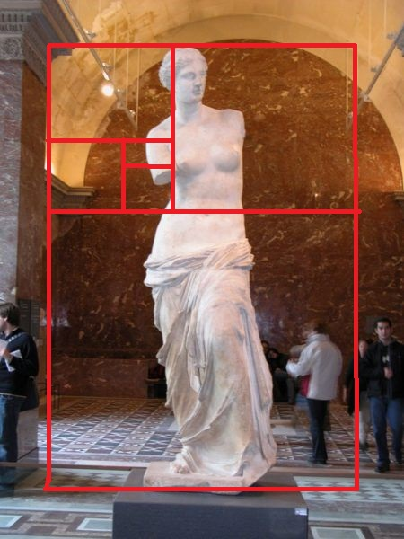

Estátua Grega

- Acredita-se que Fídias tenha seguido princípios estéticos harmônicos ao esculpir a estátua. Esses princípios podem incluir o uso do retângulo de ouro.
A altura da estátua da Atena Partenos era estimada em cerca de 12 metros. Se a proporção áurea fosse aplicada, a altura total da estátua poderia ser dividida em duas partes, de modo que a parte inferior seria aproximadamente 1,618 vezes mais alta do que a parte superior.
